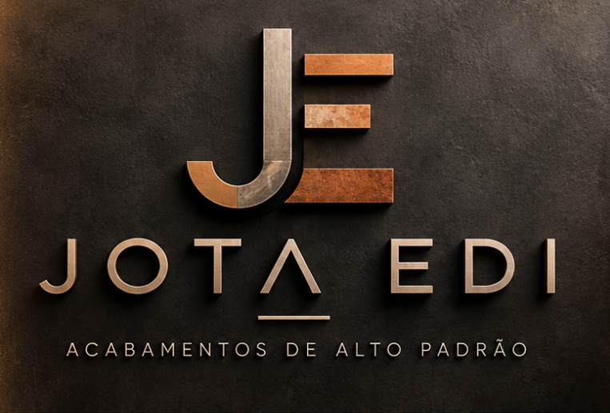

Pintura de alto padrão
Pintura interna e externa com preparação criteriosa, correção de imperfeições e acabamento final uniforme, pronto para a entrega ao cliente final.
Saiba mais sobre Pintura de alto padrão
Transformamos superfícies em elementos de destaque.
A empresa
A Jota Edi é parceira de execução de pintura, texturas decorativas e acabamentos especiais para construtoras, incorporadoras, arquitetos e empreiteiras na Grande São Paulo e no interior do estado.
Unimos conhecimento técnico, materiais de qualidade e gestão de obra para entregar superfícies que valorizam o empreendimento, dentro do cronograma e no padrão especificado em projeto.
Conheça a Jota EdiPadrão de acabamento compatível com empreendimentos de alto padrão.
Planejamento, controle e comunicação clara com a obra.
Canteiro protegido, limpo e integrado às demais frentes.
Produtividade com método, sem retrabalho e sem atrasos.
Especialidades
Do cimento queimado ao aço corten, executamos acabamentos que se tornam parte da arquitetura.
Pintura interna e externa com preparação criteriosa, correção de imperfeições e acabamento final uniforme, pronto para a entrega ao cliente final.
Saiba mais sobre Pintura de alto padrãoSoluções contemporâneas que valorizam ambientes e criam pontos de destaque, com aplicação consistente em grandes e pequenas áreas.
Saiba mais sobre Texturas decorativasEfeitos inspirados na aparência de pedras naturais e minerais, com profundidade, veios e variações de tom controladas.
Saiba mais sobre Pedras naturais e mineraisEfeito contemporâneo de cimento queimado para projetos residenciais e comerciais, com nuances naturais e acabamento refinado.
Saiba mais sobre Cimento queimadoAcabamentos de aparência natural e identidade marcante, com tons terrosos que aproximam arquitetura e matéria-prima.
Saiba mais sobre Barro e Taí Pau-BrasilA estética do aço oxidado com forte presença arquitetônica, sem o peso nem os cuidados de uma chapa metálica real.
Saiba mais sobre Aço cortenDiferenciais
Leitura de projeto, memorial e cronograma antes da mobilização. Cada frente começa com escopo, quantitativos e sequência definidos.
Ponto focal único, acompanhamento de avanço e alinhamento contínuo com a engenharia e a gerenciadora da obra.
Aplicadores treinados em cada técnica, com domínio de pintura, texturas e acabamentos especiais.
Tratamento do substrato como etapa central: é na preparação que se garante o resultado e a durabilidade.
Produtos de fabricantes reconhecidos, aplicados conforme especificação técnica e recomendações do fabricante.
Proteção de áreas, organização do canteiro e respeito às demais frentes de trabalho e ao cronograma geral.
Processo
Portfólio
Conheça obras executadas pela Jota Edi, com registros de antes, durante e depois. Acompanhe também o dia a dia das obras no Instagram.
Área de atuação
Atendemos construtoras, incorporadoras, escritórios de arquitetura e design, empreiteiras e gerenciadoras de obras em projetos residenciais, comerciais e corporativos.
Para quem atendemosContato
Estamos prontos para apresentar nossos serviços, receber seu cadastro de fornecedores e avaliar novas oportunidades.